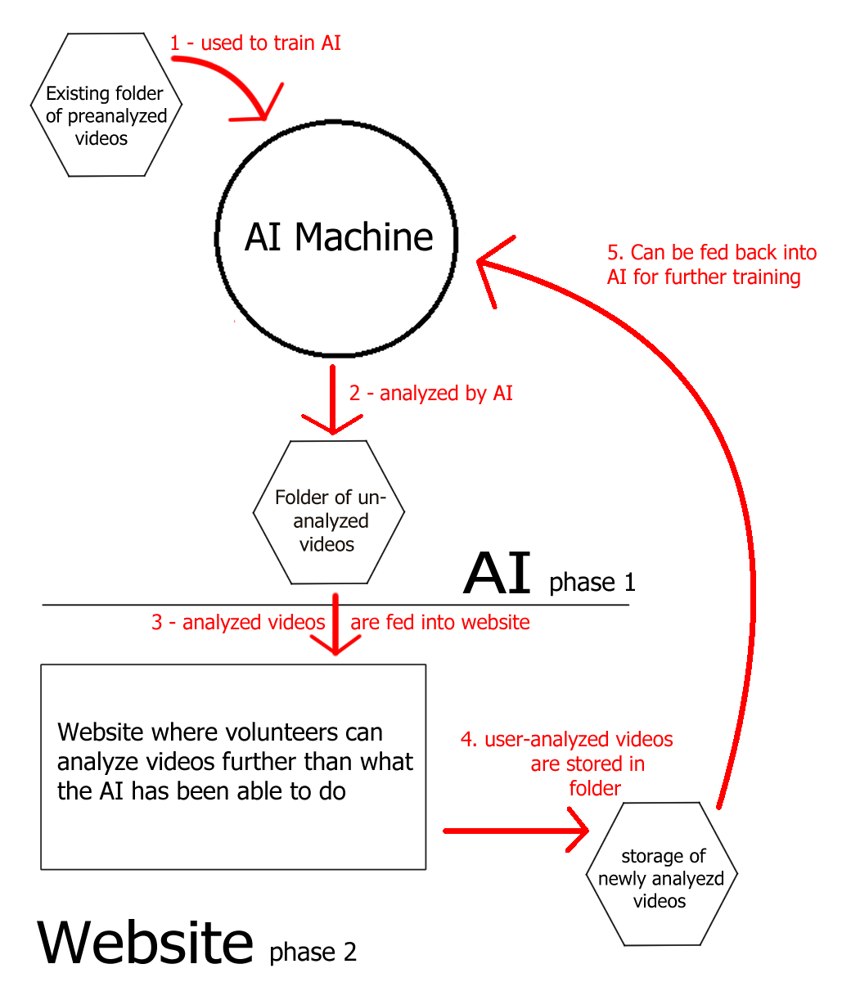

The Earth is dying, and humans are to blame. Millions of species are facing extinction
thanks to humans, yet there's little that we're doing about it. One of these species is
Caribou, the largest, northern-ranging terrestrial animal. They are an important part of
our ecosystem, providing food to large carnivours as well as the indiginous species of
Alaksa and Northern-Canada, yet in the past two decades their numbers have fallen
by more than 50%. Losing such an important species would have devistating effects on the
environment, yet despite that scientists are trying to help caribou increase their
numbers, there's still very little that we know about them.
Biologists at the Bureau of Land Management and Environment Yukon have
deployed video camera collars on caribou herds in remote areas of Alaska and
Canada in order to learn more about them. These collars take precisely geolocated, 9 second
long video clips every 20 minutes. This allows researchers to take a look inside the lives of
Arctic caribou herds and gather information such as what the caribou are eating and their
current calf numebrs.
Currently, scientists have amassed over 90,000 videos, totalling over 3 terabytes
of data. This data is then analyzed by volunteers for things such as important aspects of a
caribous day to day life, the amount of calves in a herd, and what the caribou are eating.
It has been estimated that the amount of time it would take for volunteers to analyze these
videos would be a minimum of 1 year, 41 days, and 21 hours to analyze these.
Our team found that part of the problem with our client's project is that human analysis of data
takes way too much time. Thus, phase one of our solution is to create an AI machine
that can analyze and categorize these videos based on video quality.
The specific type of AI machine that we will be creating will be a Convolutional Nueral Network, or
a CNN. A Neural Network is a set of algorithms designed to simulate the human brain and how it processes
things. A CNN is a type of neural network that uses a deep learning algorithm that takes in an input
image, assigns an importance to various objects located in the image, and be able to differentiate one
from another.
Our CNN will specifically be trained with videos that have been previously categorized by volunteers.
The videos will be used to train the AI to recognize four different types of video quality: "Excellent",
"Good/Fair", "Poor", and "Extremely Obstructed". An indepth definition for each of these can be found in
our Requirements Specification Document located on our deliverables
page.
Once trained, the CNN will be able to have videos run against it so that the videos will be categorized
into the above mentioned quality categorize. This solution will help our client by decreasing both the
amount of videos that need to be anlayzed, as "Extremely Obstructed" videos don't yield anything visual
and thus don't need to be analyzed for plants, as well as lowering the amount of categories volunteers
need to analyze in each video.
Phase 2 of the project will only be started once Phase 1 is complete, since our client's main goal is to
create a working AI that can lower the amount of images needing to be categorized.
 Phase 2 consists of creating a website that provides the volunteers with an easier way to categorize videos.
A diagram of how our website will be layed out can be seen in the figure above.
There will be two paths from the main page of the website. The first will be a training path that will allow new
volunteers to go through a process that teaches them how to recognize the different aspects of videos such as the
caribou’s habits, the number of calves, and the terrain type. Each time they finish a training video, the user will
be shown which answers are right and wrong, and be given a score for that video. If the user’s average score for
all the videos is above 80%, they will then receive an activation code that will allow them to log in to the website.
Phase 2 consists of creating a website that provides the volunteers with an easier way to categorize videos.
A diagram of how our website will be layed out can be seen in the figure above.
There will be two paths from the main page of the website. The first will be a training path that will allow new
volunteers to go through a process that teaches them how to recognize the different aspects of videos such as the
caribou’s habits, the number of calves, and the terrain type. Each time they finish a training video, the user will
be shown which answers are right and wrong, and be given a score for that video. If the user’s average score for
all the videos is above 80%, they will then receive an activation code that will allow them to log in to the website.
An activation code or username/password will allow the volunteer to login to the rest of the website. If using an
activation code, the volunteer will be able to create a username and password. Once logged in, the volunteer can then
choose to either analyze videos at Stage 1, the stage where videos need to be analyzed into broader categories such
as if the caribou is eating or how many calves there are, or Stage 2, the stage where videos need to be analyzed more
in depth such as for what species of plant the caribou are eating. Each of these stages will take the user to another
page that allows them to choose specific types of videos. For example, if the volunteer is specialized in plants in the
tundra regions, they will be able to select the habitat type of “Tundra” and the activity type of “Eating” and be
presented with videos that fall only into those two categories. These different categorize that can be selected will
be set to “All” by default.
After selecting a category, the volunteer will then be taken to a forum page containing a video forum the selected
categorize they chose. This forum page will consist of the video as well as the forum, which will already have all
the predetermined categorize filled in and unable to be changed. For instance, the videos name and the video quality
determined by the AI will already be prefilled and locked so the user cannot change them. The forum will also consist
of drop-down tabs with predetermined answers already filled in, allowing the user an easy experience analyzing the
videos. When hitting submit, the data the user has entered into the forum will be saved to a backend database created
by Django.
Lastly, there will be a page specifically available to users who login with an admin username/password. The page will
allow them to see the information in the database. The page will also allow the admins to manage users and videos.
The creation of this website will help both the volunteers analyzing the videos as well as our client. This website will
help the volunteers by providing an easy-to-use forum and video on the same page, with the forum already filled out with
any categorize the video has already been assigned. The website will help out our client by condensing everything (providing
the videos to volunteers, training the volunteers, analyzing the videos, and the data for the videos) all in one place.
The way the two phases our project work together can be seen in the image below:

Phase one of our project, the AI machine, uses previously categorized videos to train itself(1). It is then provided
with uncategorized videos, which it analyzes and sorts into the correct categorize (2). These images are then fed into
Phase two of our project then stores these videos and their information in a secure database. Volunteers then further
analyze these videos for categories unable to be recognized by the AI by entering the information into the provided forum (4).
They submit their information, which is then stored with the video in its secure database (5). In later projects, this
information can then be used to further train the AI to recognize and categorize videos into more specific categories such as
number of calves in a heard or terrain type (6).
The initial concept for this project was provided by our sponsor, in the form of this
Capstone Project Proposal